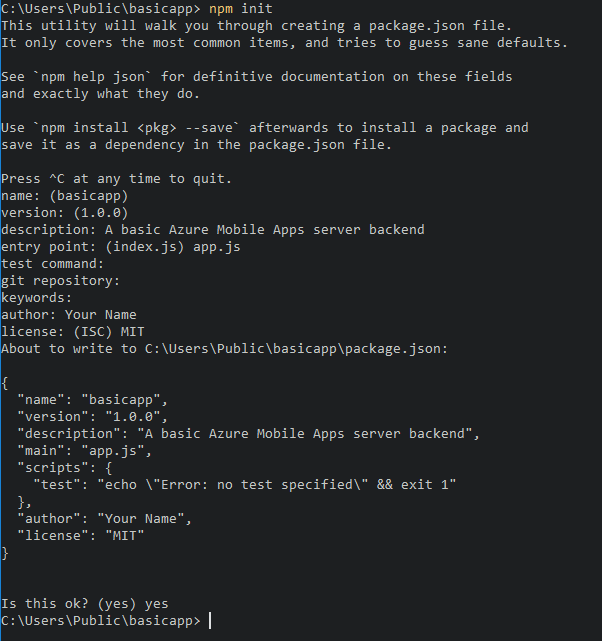

How to use the Node.js backend Server SDK¶
This article provides detailed information and examples that show how to work with a NodeJS backend for Azure Mobile Apps.
Introduction¶
Azure Mobile Apps provides the capability to add a mobile-optimized data access Web API to a web application. The Azure Mobile Apps SDK is provided for ASP.NET Framework and Node.js web applications. The SDK provides the following operations:
- Table operations (read, insert, update, delete) for data access
- Custom API operations
Both operations provide for authentication across all identity providers that Azure App Service allows. These providers include social identity providers such as Facebook, Twitter, Google, and Microsoft, as well as Azure Active Directory for enterprise identity.
Supported platforms¶
The Azure Mobile Apps Node.js SDK supports the Node 6.x and later, and has been tested up to Node 12.x. Other versions of Node might work but are not supported.
The Azure Mobile Apps Node.js SDK supports two database drivers:
- The node-mssql driver supports Azure SQL Database and local SQL Server instances.
- The sqlite3 driver supports SQLite databases on a single instance only.
Create a basic Node back end by using the command line¶
Every Azure Mobile Apps Node.js back end starts as an Express application. Express is the most popular web service framework available for Node.js. You can create a basic Express application as follows:
-
In a command or PowerShell window, create a directory for your project:
$ mkdir basicapp -
Run
npm initto initialize the package structure:$ cd basicapp $ npm init
The npm init command asks a set of questions to initialize the project. See the example output:

-
Install the
expressandazure-mobile-appslibraries from the npm repository:npm install --save express azure-mobile-apps -
Create an
app.jsfile to implement the basic mobile server:var express = require('express'), azureMobileApps = require('azure-mobile-apps'); var app = express(), mobile = azureMobileApps(); // Define a TodoItem table. mobile.tables.add('TodoItem'); // Add the Mobile API so it is accessible as a Web API. app.use(mobile); // Start listening on HTTP. app.listen(process.env.PORT || 3000);
This application creates a mobile-optimized Web API with a single endpoint (/tables/TodoItem) that provides unauthenticated access to an underlying SQL data store by using a dynamic schema. It is suitable for following the client library quickstarts:
You can find the code for this basic application in the samples area on GitHub.
Enable a home page for your application¶
Many applications are a combination of web and mobile apps. You can use the Express framework to combine the two facets. Sometimes, however, you might want to only implement a mobile interface. It's useful to provide a home page to ensure that the app service is up and running. You can either provide your own home page or enable a temporary home page. To enable a temporary home page, use the following code to instantiate Azure Mobile Apps:
var mobile = azureMobileApps({ homePage: true });
If you only want this option available when developing locally, you can add this setting to the azureMobile.js configuration file:
module.exports = {
homePage: true,
};
You can add other settings to the azureMobile.js file, as required.
Table operations¶
The azure-mobile-apps Node.js Server SDK provides mechanisms to expose data tables stored in Azure SQL Database as a Web API. It provides five operations:
| Operation | Description |
|---|---|
| GET /tables/tablename | Get all records in the table. |
| GET /tables/tablename/:id | Get a specific record in the table. |
| POST /tables/tablename | Create a record in the table. |
| PATCH /tables/tablename/:id | Update a record in the table. |
| DELETE /tables/tablename/:id | Delete a record in the table. |
This Web API supports OData v3 and extends the table schema to support offline data sync.
Define tables by using a dynamic schema¶
Before you can use a table, you must define it. You can define tables by using a static schema (where you define the columns in the schema) or dynamically (where the SDK controls the schema based on incoming requests). In addition, you can control specific aspects of the Web API by adding JavaScript code to the definition.
As a best practice, you should define each table in a JavaScript file in the tables directory, and then use the tables.import() method to import the tables. Extending the basic-app sample, you would adjust the app.js file:
var express = require('express'),
azureMobileApps = require('azure-mobile-apps');
var app = express(),
mobile = azureMobileApps();
// Define the database schema that is exposed.
mobile.tables.import('./tables');
// Provide initialization of any tables that are statically defined.
mobile.tables.initialize().then(function () {
// Add the Mobile API so it is accessible as a Web API.
app.use(mobile);
// Start listening on HTTP.
app.listen(process.env.PORT || 3000);
});
Define the table in ./tables/TodoItem.js:
var azureMobileApps = require('azure-mobile-apps');
var table = azureMobileApps.table();
// Additional configuration for the table goes here.
module.exports = table;
Tables use a dynamic schema by default.
Define tables by using a static schema¶
You can explicitly define the columns to expose via the Web API. The azure-mobile-apps Node.js SDK automatically adds any extra columns required for offline data sync to the list that you provide. For example, the quickstart client applications require a table with two columns: text (a string) and complete (a Boolean). The table can be defined in the table definition JavaScript file (located in the tables directory) as follows:
var azureMobileApps = require('azure-mobile-apps');
var table = azureMobileApps.table();
// Define the columns within the table.
table.columns = {
"text": "string",
"complete": "boolean"
};
// Turn off the dynamic schema.
table.dynamicSchema = false;
module.exports = table;
If you define tables statically, you must also call the tables.initialize() method to create the database schema on startup. The tables.initialize() method returns a promise so that the web service does not serve requests before the database is initialized.
Use SQL Server Express as a development data store on your local machine¶
The Azure Mobile Apps Node.js SDK provides three options for serving data out of the box:
- Use the memory driver to provide a non-persistent example store.
- Use the mssql driver to provide a SQL Server Express data store for development.
- Use the mssql driver to provide an Azure SQL Database data store for production.
The Azure Mobile Apps Node.js SDK uses the mssql Node.js package to establish and use a connection to both SQL Server Express and SQL Database. This package requires that you enable TCP connections on your SQL Server Express instance.
[!TIP] The memory driver does not provide a complete set of facilities for testing. If you want to test your back end locally, we recommend the use of a SQL Server Express data store and the mssql driver.
- Download and install Microsoft SQL Server 2019 Developer.
- Run Configuration Manager:
a. Expand the SQL Server Network Configuration node in the tree menu.
b. Select Protocols for
c. Right-click TCP/IP and select Enable. Select OK in the pop-up dialog box.
d. Select SQL Server Services in the tree menu.
e. Right-click SQL Server (
j. Close Configuration Manager.
You will also have to create a username and password that Azure Mobile Apps can use to connect to the database. Ensure the user you create has the dbcreator server role. For more information on configuring users, consult the SQL Server documentation
Be sure to record the username and password that you selected. You might need to assign additional server roles or permissions, depending on your database requirements.
The Node.js application reads the SQLCONNSTR_MS_TableConnectionString environment variable for
the connection string for this database. You can set this variable in your environment. For example, you can use PowerShell to set this environment variable:
$env:SQLCONNSTR_MS_TableConnectionString = "Server=127.0.0.1; Database=mytestdatabase; User Id=azuremobile; Password=T3stPa55word;"
Access the database through a TCP/IP connection. Provide a username and password for the connection.
Configure your project for local development¶
Azure Mobile Apps reads a JavaScript file called azureMobile.js from the local file system. Do not use this file to configure the Azure Mobile Apps SDK in production. Instead, use App settings in the Azure portal.
The azureMobile.js file should export a configuration object. The most common settings are:
- Database settings
- Diagnostic logging settings
- Alternate CORS settings
This example azureMobile.js file implements the preceding database settings:
module.exports = {
cors: {
origins: [ 'localhost' ]
},
data: {
provider: 'mssql',
server: '127.0.0.1',
database: 'mytestdatabase',
user: 'azuremobile',
password: 'T3stPa55word'
},
logging: {
level: 'verbose'
}
};
We recommend that you add azureMobile.js to your .gitignore file (or other source code control ignore file) to prevent passwords from being stored in the cloud.
Configure app settings for your mobile app¶
Most settings in the azureMobile.js file have an equivalent app setting in the Azure portal. Use the following list to configure your app in App settings:
| App setting | azureMobile.js setting | Description | Valid values |
|---|---|---|---|
| MS_MobileAppName | name | Name of the app | string |
| MS_MobileLoggingLevel | logging.level | Minimum log level of messages to log | error, warning, info, verbose, debug, silly |
| MS_DebugMode | debug | Enables or disables debug mode | true, false |
| MS_TableSchema | data.schema | Default schema name for SQL tables | string (default: dbo) |
| MS_DynamicSchema | data.dynamicSchema | Enables or disables debug mode | true, false |
| MS_DisableVersionHeader | version (set to undefined) | Disables the X-ZUMO-Server-Version header | true, false |
| MS_SkipVersionCheck | skipversioncheck | Disables the client API version check | true, false |
Changing most app settings requires a service restart.
Use Azure SQL as your production data store¶
Using Azure SQL Database as a data store is identical across all Azure App Service application types. If you have not done so already, follow these steps to create an Azure App Service back end. Create an Azure SQL instance, then set the app setting SQLCONNSTR_MS_TableConnectionString to the connection string for the Azure SQL instance you wish to use. Ensure that the Azure App Service that is running your back end can communicate with your Azure SQL instance.
Require authentication for access to tables¶
If you want to use App Service Authentication with the tables endpoint, you must configure App Service Authentication in the Azure portal first. For more information, see the configuration guide for the identity provider that you intend to use:
- Configure Azure Active Directory authentication
- Configure Facebook authentication
- Configure Google authentication
- Configure Microsoft authentication
- Configure Twitter authentication
Each table has an access property that you can use to control access to the table. The following sample shows a statically defined table with authentication required.
var azureMobileApps = require('azure-mobile-apps');
var table = azureMobileApps.table();
// Define the columns within the table.
table.columns = {
"text": "string",
"complete": "boolean"
};
// Turn off the dynamic schema.
table.dynamicSchema = false;
// Require authentication to access the table.
table.access = 'authenticated';
module.exports = table;
The access property can take one of three values:
- anonymous indicates that the client application is allowed to read data without authentication.
- authenticated indicates that the client application must send a valid authentication token with the request.
- disabled indicates that this table is currently disabled.
If the access property is undefined, unauthenticated access is allowed.
Use authentication claims with your tables¶
You can set up various claims that are requested when authentication is set up. These claims are not normally available through the context.user object. However, you can retrieve them by using the context.user.getIdentity() method. The getIdentity() method returns a promise that resolves to an object. The object is keyed by the authentication method (facebook, google, twitter, microsoftaccount, or aad).
Note If using Microsoft authentication via Azure Active Directory, the authentication method is
aad, notmicrosoftaccount.
For example, if you set up Azure Active Directory authentication and request the email addresses claim, you can add the email address to the record with the following table controller:
var azureMobileApps = require('azure-mobile-apps');
// Create a new table definition.
var table = azureMobileApps.table();
table.columns = {
"emailAddress": "string",
"text": "string",
"complete": "boolean"
};
table.dynamicSchema = false;
table.access = 'authenticated';
/**
* Limit the context query to those records with the authenticated user email address
* @param {Context} context the operation context
* @returns {Promise} context execution Promise
*/
function queryContextForEmail(context) {
return context.user.getIdentity().then((data) => {
context.query.where({ emailAddress: data.aad.claims.emailaddress });
return context.execute();
});
}
/**
* Adds the email address from the claims to the context item - used for
* insert operations
* @param {Context} context the operation context
* @returns {Promise} context execution Promise
*/
function addEmailToContext(context) {
return context.user.getIdentity().then((data) => {
context.item.emailAddress = data.aad.claims.emailaddress;
return context.execute();
});
}
// Configure specific code when the client does a request.
// READ: only return records that belong to the authenticated user.
table.read(queryContextForEmail);
// CREATE: add or overwrite the userId based on the authenticated user.
table.insert(addEmailToContext);
// UPDATE: only allow updating of records that belong to the authenticated user.
table.update(queryContextForEmail);
// DELETE: only allow deletion of records that belong to the authenticated user.
table.delete(queryContextForEmail);
module.exports = table;
To see what claims are available, use a web browser to view the /.auth/me endpoint of your site.
Disable access to specific table operations¶
In addition to appearing on the table, the access property can be used to control individual operations. There are four operations:
readis the RESTful GET operation on the table.insertis the RESTful POST operation on the table.updateis the RESTful PATCH operation on the table.deleteis the RESTful DELETE operation on the table.
For example, you might want to provide a read-only unauthenticated table:
var azureMobileApps = require('azure-mobile-apps');
var table = azureMobileApps.table();
// Read-only table. Only allow READ operations.
table.read.access = 'anonymous';
table.insert.access = 'disabled';
table.update.access = 'disabled';
table.delete.access = 'disabled';
module.exports = table;
Adjust the query that is used with table operations¶
A common requirement for table operations is to provide a restricted view of the data. For example, you can provide a table that is tagged with the authenticated user ID such that you can only read or update your own records. The following table definition provides this functionality:
var azureMobileApps = require('azure-mobile-apps');
var table = azureMobileApps.table();
// Define a static schema for the table.
table.columns = {
"userId": "string",
"text": "string",
"complete": "boolean"
};
table.dynamicSchema = false;
// Require authentication for this table.
table.access = 'authenticated';
// Ensure that only records for the authenticated user are retrieved.
table.read(function (context) {
context.query.where({ userId: context.user.id });
return context.execute();
});
// When adding records, add or overwrite the userId with the authenticated user.
table.insert(function (context) {
context.item.userId = context.user.id;
return context.execute();
});
module.exports = table;
Operations that normally run a query have a query property that you can adjust by using a where clause. The query property is a QueryJS object that is used to convert an OData query to something that the data back end can process. For simple equality cases (like the preceding one), you can use a map. You can also add specific SQL clauses:
context.query.where('myfield eq ?', 'value');
Configure a soft delete on a table¶
A soft delete does not actually delete records. Instead it marks them as deleted within the database by setting the deleted column to true. The Azure Mobile Apps SDK automatically removes soft-deleted records from results unless the Mobile Client SDK uses includeDeleted(). To configure a table for a soft delete, set the softDelete property in the table definition file:
var azureMobileApps = require('azure-mobile-apps');
var table = azureMobileApps.table();
// Define the columns within the table.
table.columns = {
"text": "string",
"complete": "boolean"
};
// Turn off the dynamic schema.
table.dynamicSchema = false;
// Turn on soft delete.
table.softDelete = true;
// Require authentication to access the table.
table.access = 'authenticated';
module.exports = table;
You should establish a mechanism for deleting records: a client application, a WebJob, an Azure Function, or a custom API.
Seed your database with data¶
When you're creating a new application, you might want to seed a table with data. You can do this within the table definition JavaScript file as follows:
var azureMobileApps = require('azure-mobile-apps');
var table = azureMobileApps.table();
// Define the columns within the table.
table.columns = {
"text": "string",
"complete": "boolean"
};
table.seed = [
{ text: 'Example 1', complete: false },
{ text: 'Example 2', complete: true }
];
// Turn off the dynamic schema.
table.dynamicSchema = false;
// Require authentication to access the table.
table.access = 'authenticated';
module.exports = table;
Seeding of data happens only when you've used the Azure Mobile Apps SDK to create the table. If the table already exists in the database, no data is injected into the table. If the dynamic schema is turned on, the schema is inferred from the seeded data.
We recommend that you explicitly call the tables.initialize() method to create the table when the service starts running.
Enable Swagger support¶
Azure Mobile Apps comes with built-in Swagger support. To enable Swagger support, first install swagger-ui as a dependency:
npm install --save swagger-ui
You can then enable Swagger support in the Azure Mobile Apps constructor:
var mobile = azureMobileApps({ swagger: true });
You probably only want to enable Swagger support in development editions. You can do this by using the NODE_ENV app setting:
var mobile = azureMobileApps({ swagger: process.env.NODE_ENV !== 'production' });
The swagger endpoint is located at http://yoursite.azurewebsites.net/swagger. You can access the Swagger UI via the /swagger/ui endpoint. If you choose to require authentication across your entire application, Swagger produces an error. For best results, choose to allow unauthenticated requests in the Azure App Service Authentication/Authorization settings, and then control authentication by using the table.access property.
You can also add the Swagger option to your azureMobile.js file if you only want Swagger support for developing locally.
Custom APIs¶
In addition to the Data Access API via the /tables endpoint, Azure Mobile Apps can provide custom API coverage. Custom APIs are defined in a similar way to the table definitions and can access all the same facilities, including authentication.
Define a custom API¶
Custom APIs are defined in much the same way as the Tables API:
- Create an
apidirectory. - Create an API definition JavaScript file in the
apidirectory. - Use the import method to import the
apidirectory.
Here is the prototype API definition based on the basic-app sample that we used earlier:
var express = require('express'),
azureMobileApps = require('azure-mobile-apps');
var app = express(),
mobile = azureMobileApps();
// Import the custom API.
mobile.api.import('./api');
// Add the Mobile API so it is accessible as a Web API.
app.use(mobile);
// Start listening on HTTP
app.listen(process.env.PORT || 3000);
Let's take an example API that returns the server date by using the Date.now() method. Here is the api/date.js file:
var api = {
get: function (req, res, next) {
var date = { currentTime: Date.now() };
res.status(200).type('application/json').send(date);
});
};
module.exports = api;
Each parameter is one of the standard RESTful verbs: GET, POST, PATCH, or DELETE. The method is a standard ExpressJS middleware function that sends the required output.
Require authentication for access to a custom API¶
The Azure Mobile Apps SDK implements authentication in the same way for both the tables endpoint and custom APIs. To add authentication to the API developed in the previous section, add an access property:
var api = {
get: function (req, res, next) {
var date = { currentTime: Date.now() };
res.status(200).type('application/json').send(date);
});
};
// All methods must be authenticated.
api.access = 'authenticated';
module.exports = api;
You can also specify authentication on specific operations:
var api = {
get: function (req, res, next) {
var date = { currentTime: Date.now() };
res.status(200).type('application/json').send(date);
}
};
// The GET methods must be authenticated.
api.get.access = 'authenticated';
module.exports = api;
The same token that is used for the tables endpoint must be used for custom APIs that require authentication.
Handle large file uploads¶
The Azure Mobile Apps SDK uses the body-parser middleware to accept and decode body content in your submission. You can preconfigure body-parser to accept larger file uploads:
var express = require('express'),
bodyParser = require('body-parser'),
azureMobileApps = require('azure-mobile-apps');
var app = express(),
mobile = azureMobileApps();
// Set up large body content handling.
app.use(bodyParser.json({ limit: '50mb' }));
app.use(bodyParser.urlencoded({ limit: '50mb', extended: true }));
// Import the custom API.
mobile.api.import('./api');
// Add the Mobile API so it is accessible as a Web API.
app.use(mobile);
// Start listening on HTTP.
app.listen(process.env.PORT || 3000);
The file is base-64 encoded before transmission. This encoding increases the size of the actual upload (and the size that you must account for).
Execute custom SQL statements¶
The Azure Mobile Apps SDK allows access to the entire context through the request object. You can easily execute parameterized SQL statements to the defined data provider:
var api = {
get: function (request, response, next) {
// Check for parameters. If not there, pass on to a later API call.
if (typeof request.params.completed === 'undefined')
return next();
// Define the query. Anything that the mssql
// driver can handle is allowed.
var query = {
sql: 'UPDATE TodoItem SET complete=@completed',
parameters: [{
completed: request.params.completed
}]
};
// Execute the query. The context for Azure Mobile Apps is available through
// request.azureMobile. The data object contains the configured data provider.
request.azureMobile.data.execute(query)
.then(function (results) {
response.json(results);
});
}
};
api.get.access = 'authenticated';
module.exports = api;
Debugging¶
Debug, diagnose, and troubleshoot Azure Mobile Apps¶
Azure App Service provides several debugging and troubleshooting techniques for Node.js applications. To get started in troubleshooting your Node.js Azure Mobile Apps back end, see the following articles:
- Monitoring Azure App Service
- Enable diagnostic logging in Azure App Service
- Troubleshoot node applications on Azure App Service
Node.js applications have access to a wide range of diagnostic log tools. Internally, the Azure Mobile Apps Node.js SDK uses [Winston] for diagnostic logging. Logging is automatically enabled when you enable debug mode or set the MS_DebugMode app setting to true in the Azure portal. Generated logs appear in the diagnostic logs in the Azure portal.